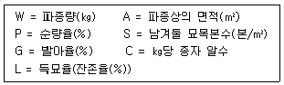
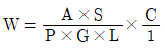
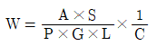
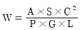
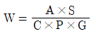
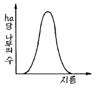
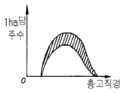

임업종묘기사 (2004-08-08 기출문제)
1과목: 조림학
1. 시비의 반응곡선을 옳게 설명한 것은?
- 양분공급량과 식물생산량 사이의 관계를 나타낸 곡선
- 양분요구량과 식물생장량 사이의 관계를 나타낸 곡선
- 양분공급량과 식물생장량 사이의 관계를 나타낸 곡선
- 양분요구량과 식물생산량 사이의 관계를 나타낸 곡선
(정답률: 알수없음)

2. 다음 중 가장 높은 온도 조건에서 접목이 실시되는 것이 이로운 수종은?
- 잣나무
- 소나무
- 밤나무
- 호도나무
(정답률: 알수없음)
3. 다음 중에서 산벌작업을 바르게 설명하는 내용은?
- 왜림을 조성하기 위한 작업 방법이다.
- 인공 조림을 중심으로 갱신 작업을 진행한다.
- 예비벌-하종벌-후벌 순으로 작업이 진행된다.
- 기본적으로 양수만을 대상으로 이령림을 조성하고자 실시되는 작업이다.
(정답률: 알수없음)
4. 미생물의 활동이 대단히 왕성하고 양료의 이용률이 높으며 부식의 형성이 쉽게되는 임지의 pH는 대략 어느 정도인가?
- pH 3.4 이하
- pH 5.0 ~ 5.5
- pH 6.5 ~ 7.0
- pH 8.0 ~ 8.5
(정답률: 알수없음)
5. 다음 조건하에 묘포 파종상에서 산파(散播)의 경우 파종량을 구하는 올바른 식은 어느 것인가?





(정답률: 알수없음)
6. 다음의 수종 중에서 삼림기후대를 고려할 때 우리나라의 강원도 북부 산간 지역에 식재 권장 가능 수종은?
- 편백
- 삼나무
- 박달나무
- 가시나무
(정답률: 알수없음)
7. 간벌의 효과와 거리가 먼 것은?
- 벌기 수확이 양적, 질적으로 높아진다.
- 생산될 목재의 형질이 향상된다.
- 조기에 간벌 수확이 얻어진다.
- 수고생장을 촉진하여 연륜폭이 넓어진다.
(정답률: 알수없음)
8. 보잔목 작업을 실시하면 그 뒤에 나타나는 임분은 대체로 어떻게 되는가?
- 이단림
- 교림
- 혼효림
- 일제림
(정답률: 알수없음)
9. 가지치기 목적을 바르게 설명하고 있는 내용은?
- 무절재(無節材)를 생산하기 위해 실시한다.
- 수간의 초살도(梢殺度)를 높이기 위해 실시한다.
- 수간 하부의 직경 생장을 촉진시키기 위해서 실시한다.
- 줄기의 편심생장을 유도하여 고급재를 생산할 목적으로 실시한다.
(정답률: 알수없음)
10. 대경목을 매년 생산할 수 있는 작업종은?
- 개벌작업
- 택벌작업
- 산벌작업
- 중림작업
(정답률: 알수없음)
11. 테트라졸륨 검사는 어떠한 목적으로 하는가?
- 바이러스 검출
- 발아 휴면 상태의 감별
- 종자활력 조사
- 대기오염의 영향 검사
(정답률: 알수없음)
12. 다음 그림과 같은 임분 구조를 가진 것은?

- 보안림
- 교림
- 동령림
- 국유림
(정답률: 알수없음)
13. 묘령(苗齡)이 2-1-2인 묘목의 이식 횟수는?
- 1 회
- 2 회
- 3 회
- 4 회
(정답률: 알수없음)
14. 다음 수종 중 종자 숙기가 5월인 것은?
- 귀룽나무
- 자작나무
- 박달나무
- 사시나무
(정답률: 알수없음)
15. 그림과 같은 구성을 보이는 동령임분에서 빗금친 부분을 간벌하였다면 어떠한 간벌방식이 적용된 것인가?

- 하층간벌
- 상층간벌
- 택벌식간벌
- 기계적간벌
(정답률: 알수없음)
16. 발아세(發芽勢)를 구하는 공식은?
- 순정 종자의 무게/시료 무게×100
- 발아 종자수/발아 실험용 종자수×100
- 가장 많이 발아한 날까지의 발아 종자수/발아 실험용 종자수×100
- 순량률(%) × 발아률(%)/100
(정답률: 알수없음)
17. 수목의 생장과 광요인에 관한 내용이다. 틀리는 것은?
- 수목생장에 미치는 광요인은 광도, 광질, 일장으로 구분할 수 있다.
- 광도는 위도, 해발고, 방위, 경사, 계절, 시각, 구름량에 따라 다르다.
- 임내 광도는 수령, 수종, 밀도에 따라 다르다.
- 임내 광도는 절대조도로 표시하는 것이 일반적이다.
(정답률: 알수없음)
18. 한다발에 잎이 다섯개인 것은?
- 섬잣나무
- 리기다 소나무
- 소나무
- 방크스 소나무
(정답률: 알수없음)
19. 어미나무(母樹)작업법으로 갱신할 때 어미나무(母樹)로 잔존시키는 양은 원래의 임목 재적의 몇 %로 하는가?
- 10 %
- 30 %
- 40 %
- 60 %
(정답률: 알수없음)
20. 묘목 식재시 나타나는 밀도 법칙을 옳게 설명한 것은?
- 밀도가 높을수록 총생산량 중 가지가 차지하는 비율이 높아진다.
- 밀도는 직경생장보다 수고생장에 큰 영향을 주지만 단목(單木)의 재적(材積)생장은 같다.
- 밀도가 지나치게 높으면 단목의 생활력은 약해지나 임분의 안정성은 높아진다.
- 밀도가 높으면 지름은 가늘지만 완만재(完滿材)가 되고 소립(疎立)시키면 초살형(梢殺型)이 된다.
(정답률: 알수없음)
2과목: 임목육종학
21. 일반 조합능력(General Combining Ability, G.C.A)을 옳게 설명한 것은?
- 한나무가 다른 나무들과 접목할 때 조직 유합의 일반적인 친화력
- 한나무가 다른 나무들과 교잡이 이루어지는 일반적인 정도
- 한나무가 다른 나무들과 교잡하여 일반적으로 우수한 차대를 내는 능력
- 한나무가 다른 나무들과 화분을 수정하는 일반적인 능력
(정답률: 알수없음)
22. 어떤 수종의 어떤 형질에 대한 유전모수가 VG = 50, VNA=10, 그리고 VE=50 이라고 추정되었다면 이 형질에 대한 협의의 유전력은?
- 0.5
- 0.1
- 0.3
- 0.4
(정답률: 알수없음)
23. 반수체에 대한 설명으로 잘 못된 것은?
- 염색체를 한 조만 갖고 있는 개체이다.
- 생식세포를 배양하여 얻을 수 있다.
- 상동염색체가 있을 수도 있다.
- 염색체를 배가시켜 순계를 얻을 수 있다.
(정답률: 알수없음)
24. 소나무류의 인공교배시 화분주입은 자화의 상태가 어떤 정도일 때가 가장 적당한가?
- 화아가 부풀어 커졌을 때
- 화수가 화린을 뚫고 그 끝이 나타났을 때
- 화린이 전개되어 축에 대하여 직각일 때
- 소구과가 성장하기 시작할 때
(정답률: 알수없음)
25. 육종에 있어서 수고, 형질 등 여러 형질을 동시에 개량하여야 하고, 효율적인 육종을 위해서는 이들 형질들간의 상관관계를 아는 것이 중요하다. 다음 중 유전상관을 결정하는 요인이 아닌 것은?
- 다면발현
- 연관
- 토양조건
- 선발효과
(정답률: 알수없음)
26. 염색체의 수를 증가시켜 새로운 품종을 만드는 방법은?
- 교잡육종법
- 선발육종법
- 배수성육종법
- 조직배양법
(정답률: 알수없음)
27. 잣나무의 한 유전자좌(遺傳子座)에 4개의 대립유전자(對立遺傳子)가 존재하는 경우 이 유전자좌에서 실현 가능한 유전자형의 수는?
- 4
- 8
- 10
- 12
(정답률: 알수없음)
28. 임목육종은 일반적으로 육종 효과가 크다고 한다. 그 이유로 가장 적당한 것은?
- 생활환이 길기 때문이다.
- 농작물 등에 비하여 부피가 크기 때문이다.
- 유전변이가 크게 보유하고 있기 때문이다.
- 염색체의 수가 적기 때문이다.
(정답률: 알수없음)
29. 자식약세 현상은 어떠한 경우 발생하는가?
- 유전적으로 서로 관련된 개체간의 교배
- 한 집단내의 수형목간의 교배
- 개화기가 동일한 개체간의 교배
- 유전적으로 서로 연관되지 않은 개체간의 교배
(정답률: 알수없음)
30. 지베렐린 처리로 개화 효과가 가장 높은 수종은?
- 잣나무
- 소나무
- 삼나무
- 낙엽송
(정답률: 알수없음)
31. 플러스임분(plus stand)을 정의한 것은?
- 여러가지 품종을 한곳에 모아서 심은 임분
- 여러가지 수종을 한곳에 모아서 심은 임분
- 수형과 생장이 탁월한 나무로 구성된 임분
- 수형과 생장에 관계없이 종자 생산이 매년 플러스 되는 임분
(정답률: 알수없음)
32. 임목 육종에서 종이나 산지간의 경쟁 비교를 위해 가장 널리 쓰이는 플롯은 어느 것인가?
- 단목 식재 플롯
- 동일 종(산지) 열식 식재 플롯
- 동일 종(산지) 군집 식재 플롯
- 비교 종(산지) 혼식 식재 플롯
(정답률: 알수없음)
33. 다음 중 잡종강세 현상을 이용하여 육성한 수종은?
- 리기테다 소나무
- 오리나무
- 스트로부 잣나무
- 물황철나무
(정답률: 알수없음)
34. Clone bank 란?
- Clone 채수원
- Clone 채종원
- Clone 보존원
- Clone 보호원
(정답률: 알수없음)
35. 낙엽송은 어느 나라에서 도입되었는가?
- 일본
- 중국
- 미국
- 독일
(정답률: 알수없음)
36. Pinus densiflora Thunbergii는?
- 해송이 화분수이다.
- 소나무가 화분수이다.
- 해송이 접수이다.
- 소나무가 접수이다.
(정답률: 알수없음)
37. 다음 중 비교적 성공한 경우의 도입종 - 도입지의 예는?
- 스트로브스 소나무 - 브라질
- 목백합나무 - 인도네시아
- 세코이아 나무 - 일본
- 라디아타 소나무 - 오스트레일리아
(정답률: 알수없음)
38. 생물공학적 기법의 장점으로 볼 수 없는 것은?
- 대량번식
- 새로운 유전적 조성의 임목 창출
- 세대 단축
- 성장 촉진
(정답률: 알수없음)
39. Hardy-Weinberg의 법칙이 성립되는 집단에서 열성호모개체인 aa의 빈도가 4%라고 하면 우성유전자 A의 빈도는?
- 32%
- 64%
- 80%
- 96%
(정답률: 알수없음)
40. 근친교배(近親交配)에 의해 임목에 나타나는 일반적인 결과가 아닌 것은?
- 열성인자의 축적에 의해서 생장이 떨어지게 된다.
- 종자 결실이 증가한다.
- 유전적으로 볼 때 동형접합체(同型接合體)가 증가한다.
- 환경에 대한 적응력이 부족하게 된다.
(정답률: 알수없음)
3과목: 산림보호학
41. 식물에 기생하는 대부분의 세균 형태는?
- 구형(coccus)
- 다형상(pleomorphic)
- 나선상(spirillum)
- 봉상(bacillus)
(정답률: 알수없음)
42. 다음 중에서 목질의 재질을 저하시키는 해충이 아닌 것은?
- 소나무좀
- 점박이 수염긴하늘소
- 복숭아명나방
- 소나무순나방
(정답률: 알수없음)
43. 삼림화재가 토양에 미치는 피해가 아닌 것은?
- 지표류하수(surface run-off)가 늘게 된다.
- 투수성(penetrability)이 증가된다.
- 지하의 저수능력이 감퇴된다.
- 물에 의한 침식이 격화된다.
(정답률: 알수없음)
44. 밤바구미의 피해를 받은 밤은 무엇으로 훈증하는가?
- 에틸알콜
- 황산
- 인화늄정제
- 탄산가스
(정답률: 알수없음)
45. 1년에 2회 발생하며, 1화기에는 자두, 복숭아등의 열매를 가해하고 2화기에는 밤나무의 열매를 주로 가해하는 해충은?
- 삼나무독나방
- 복숭아명나방
- 솔잎혹파리
- 넓적다리잎벌
(정답률: 알수없음)
46. 산림 해충 발생의 징후와 관계되는 현상은?
- 새순이 발생한다.
- 잎색이 변화한다.
- 하초(下草)가 무성해진다.
- 잎의 양(量)이 증가한다.
(정답률: 알수없음)
47. 솔잎혹파리의 월동 유충의 밀도를 나타낼 때 쓰이는 표현 방법은?
- 면적 단위로 한다.
- 가지길이를 단위로 한다.
- 먹이의 양으로 한다.
- 유아등에 모인 수로 한다.
(정답률: 알수없음)
48. 다음 중 주로 곤충이나 소동물에 의하여 전반되는 병은?
- 오동나무빗자루병
- 향나무붉은별무늬병
- 호도나무갈색부패병
- 뿌리혹병
(정답률: 알수없음)
49. 녹병의 방제에 해당되지 않는 것은?
- 중간기주의 박멸
- 나크수화제의 살포
- 저항성 품종 육성
- 석회유황합제의 살포
(정답률: 알수없음)
50. 곤충의 체벽 중에서 세포층으로 되어 있는 부분은?
- 진피층
- 외표피
- 원표피
- 기저막
(정답률: 알수없음)
51. 파이토(마이코)플라스마에 의한 병해를 방제하는데 사용하는 약제는?
- 스트렙토 마이신
- 엑티디이온 BR
- 가스가마이신
- 옥시테트라싸이클린
(정답률: 알수없음)
52. 아황산가스에 대한 식물체의 감수성에 관한 설명이다. 옳은 것은?
- 식물은 5℃ 이하에서 아황산가스에 대한 저항성이 낮아진다.
- 상대습도가 높아짐에 따라 SO2에 대한 감수성은 낮아진다.
- 암흑하에서는 SO2에 대한 저항성이 매우 크다.
- 영양분이 결핍된 곳에서 자란 식물의 감수성은 매우 낮다.
(정답률: 알수없음)
53. 그을음병을 방제하는데 가장 알맞는 방법은?
- 질소질 비료를 충분히 준다.
- 진딧물, 깍지벌레 등을 구제한다.
- 토양소독을 철저히 한다.
- 종자소독을 철저히 한다.
(정답률: 알수없음)
54. 다음 중 종자에 붙어서 월동하는 균으로 대표적인 것은?
- 뿌리혹병(근두암종병균)
- 잣나무털녹병균
- 모잘록병균
- 낙엽송잎떨림병균
(정답률: 알수없음)
55. 전염 후 발병되기까지의 잠복기간이 가장 긴 병은?
- 모잘록병
- 오동나무 탄저병
- 삼나무 적고병
- 잣나무 털녹병
(정답률: 알수없음)
56. 소나무 혹병의 중간기주는?
- 참나무
- 송이풀
- 매발톱나무
- 향나무
(정답률: 알수없음)
57. 풍해에 대한 기술 중 가장 옳은 것은?
- 수간 하부가 활엽수는 상방편심(上方偏心)을 하고 침엽수는 하방편심(下方偏心)을 한다.
- 주풍(主風)은 풍절(風折), 풍도(風倒), 열상(裂傷)등 산림에 큰 피해를 준다.
- 방풍림에 쓰이는 수종은 심근성이고 지조(枝條)가 밀생하며 성림(成林)이 빠른 것으로 한다.
- 우리나라에서는 서북풍은 온화하고 동남풍은 차고 강하며 육풍(陸風)은 해풍(海風)보다 강하다.
(정답률: 알수없음)
58. 솔나방의 월동 형태는 어느 것인가?
- 알
- 2령 유충
- 5령 유충
- 성충
(정답률: 알수없음)
59. 대기 중에서 화학반응에 의하여 새로운 독성을 지니게 되는 대기오염 물질은?
- 황산화물
- 불화수소가스
- 질소산화물
- PAN
(정답률: 알수없음)
60. 솔나방의 월동 습성을 이용한 방제법은?
- 수관에 약제를 살포한다.
- 수간에 짚이나 가마니를 감아놓아 유인 포살한다.
- 유아등을 가설하여 유인 포살한다.
- 솜뭉치에 석유를 칠하여 유충을 포살한다.
(정답률: 알수없음)
4과목: 토양학 및 비료학
61. 수용성 인산의 주성분은?
- 인산 1칼슘
- 인산 2칼슘
- 인산 3칼슘
- 인산 4칼슘
(정답률: 알수없음)
62. 요소를 가수분해 시키는 효소는?
- Urease
- Uricase
- Carbonic anhydrase
- Arginase
(정답률: 알수없음)
63. 석회를 과잉 시비한 곳에 결핍 현상을 나타내는 성분은?
- B
- Zn
- Mo
- Mn
(정답률: 알수없음)
64. 요소는 암모니아 외에 어떤 물질을 원료로 만드는가?
- 염산가스
- 황산가스
- 탄산가스
- 석탄가스
(정답률: 알수없음)
65. 유효질소 30 kg 이 필요한 경우에 요소(N 46%, 흡수율 83%)로써 질소 비료를 충당한다면 필요한 요소량은?
- 36.2 kg
- 57.4 kg
- 78.6 kg
- 117.9 kg
(정답률: 알수없음)
66. 식물생육에 필요한 원소 중 미량원소로 분류되는 것은?
- Ca
- O
- B
- S
(정답률: 알수없음)
67. 흡습성이 매우 커서 방습처리하여 저장하여야 하며, 화기의 접근 등 관리에 주의를 요하는 비료는?
- 요소
- 질산암모늄
- 황산암모늄
- 황산칼륨
(정답률: 알수없음)
68. 토양을 침식으로부터 보호하는 방법이 아닌 것은?
- 과도한 경운
- 토양개량제 사용
- 등고선 재배법
- 보호작물재배
(정답률: 알수없음)
69. 다음 점토광물 중 양이온치환용량이 가장 큰 것은?
- kaolinite
- illite
- montmorillonite
- chlorite
(정답률: 알수없음)
70. 산성 토양을 중화하는데 가장 유효한 것은?
- N
- P2O5
- K2O
- CaO
(정답률: 알수없음)
71. 녹색의 고등식물에 광선을 비치지 않는 경우 나타나는 주된 증상은?
- 기공이 막혀 물의 증산과 호흡이 억제된다.
- 기공이 열려 물의 증산과 호흡이 증가된다.
- 양분의 흡수가 증가된다.
- 칼슘이나 마그네슘보다 질소, 인산, 칼륨의 흡수율이 높아진다.
(정답률: 알수없음)
72. 다음 중 토양 미생물의 작용이 아닌 것은?
- 유기물 분해
- 양분의 순환
- 토양 물리성 개선
- 토양산성 교정
(정답률: 알수없음)
73. 과린산석회 비료와 배합하면 수용성 인산의 일부가 불용성으로 변하는 비료는?
- 석회질소
- 황산암모늄
- 황산칼륨
- 유기질비료
(정답률: 알수없음)
74. 질소기아(nitrogen starvation)현상에 대한 설명으로 옳지 않은 것은?
- 탄질율이 높은 유기물이 가해질 경우 발생한다.
- 미생물과 고등식물 간에 질소경쟁이 일어난다.
- 토양으로부터 질소의 유실이 촉진된다.
- 미생물상호 간의 질소경쟁도 일어난다.
(정답률: 알수없음)
75. 요소와 석회질소를 각각 성분량으로 등량 시비 하였더니 요소시비구는 450 kg/10a, 석회질소시비구는 442 kg/10a의 수량을 얻었으며, 이 때의 무비료구 수량은 300 kg/10a 였다. 석회질소의 비효가는 얼마인가?
- 약 95%
- 약 87%
- 약 78%
- 약 66%
(정답률: 알수없음)
76. 토양의 산성화와 관련이 가장 적은 것은?
- 산성비료
- 토양의 완충능의 크기
- 부식(humus)의 종류
- 토양 진비중
(정답률: 알수없음)
77. 우리나라 일반 경작지 토양의 진밀도의 평균값은?
- 약 16g/cm3
- 약 5.6g/cm3
- 약 2.6g/cm3
- 약 1.2g/cm3
(정답률: 알수없음)
78. 다음 점토광물 중 인산질비료의 고정력이 가장 큰 것은?
- Kaolinite
- Ilite
- Montmorillonite
- Vermiculite
(정답률: 알수없음)
79. 글라이화 작용(gleization)이 가장 잘 일어나는 곳은?
- 배수가 양호한 밭에서
- 지하수위가 낮은 곳에서
- 삼림지대에서
- 논 토양이나 저습지에서
(정답률: 알수없음)
80. 조성에 있어서 토양공기(soil air)가 대기와 뚜렷이 다른점은?
- 관계습도와 이산화탄소 함량이 높다.
- 관계습도가 높고 이산화탄소 함량이 낮다.
- 관계습도가 낮고 이산화탄소 함량이 높다.
- 관계습도와 이산화탄소 함량이 낮다.
(정답률: 알수없음)